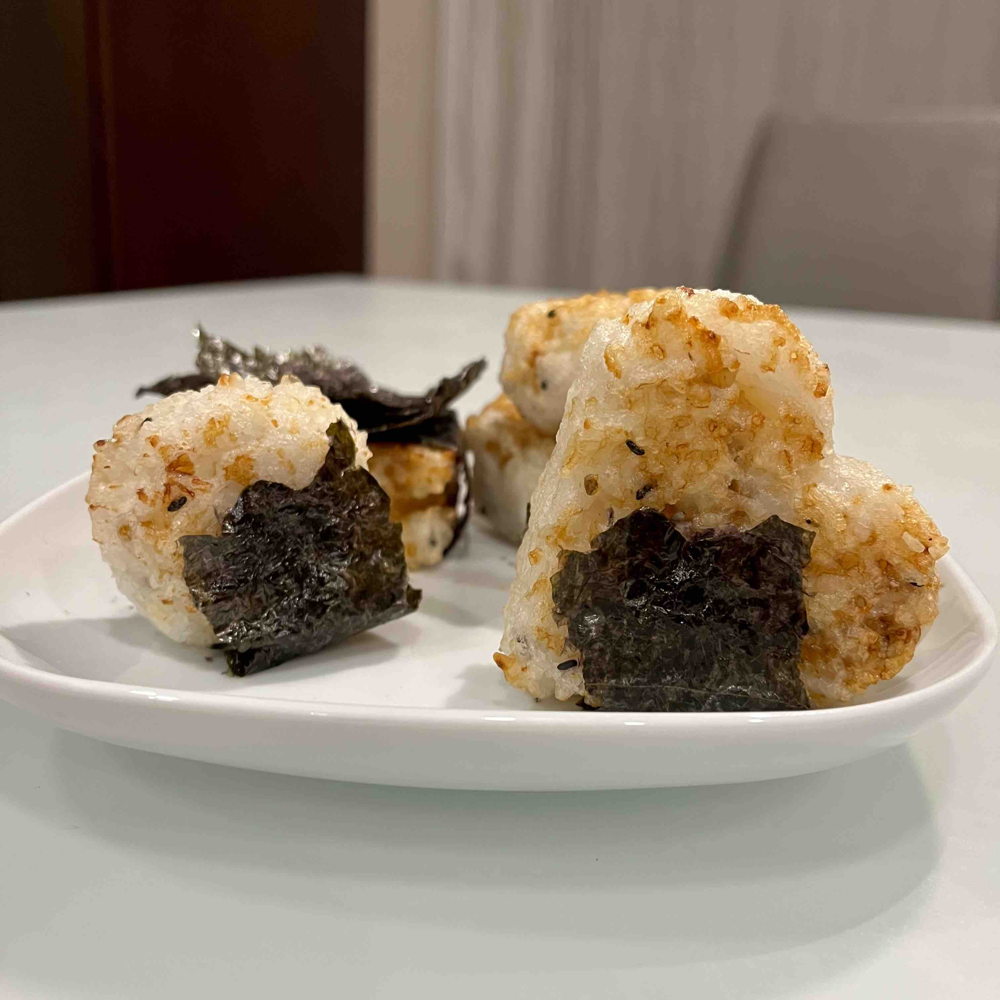

Tuna-Filled Yaki Onigiri

Description
Rice balls that are filled with a savory tuna filling, then air-fried until lightly golden and crisp. Recipe taken from Eric Tries It.
Ingredients (makes 6 onigiri)
- 1 can of tuna (185 g), drained
- 1/4 cup kewpie mayo
- sriracha, to taste
- 3 cups freshly cooked sushi rice
- 1 tsp rice wine vinegar
- 2 tbsp furikake
- 2 tbsp oil
- 3 tbsp soy sauce
- 6 nori seaweed strips
Steps
- In a small bowl mix together drained tuna, mayo, and sriracha. Set aside.
- In a large bowl add freshly cooked rice, then season with rice wine vinegar and furikake. Work quickly since you’ll want to shape the rice while it’s still hot.
- Form each rice ball with a onigiri mold or with clean wet hands, making sure to sandwich 1 tbsp of tuna filling in the center.
- In an oiled pan, fry each onigiri until lightly golden. Brush with soy sauce, then pan fry until crisp. Alternatively, brush with soy sauce and air fry for 5 minutes on each side at 375ºF (brush on extra sauce if desired). Wrap with nori seaweed strips and enjoy.
Return to homepage